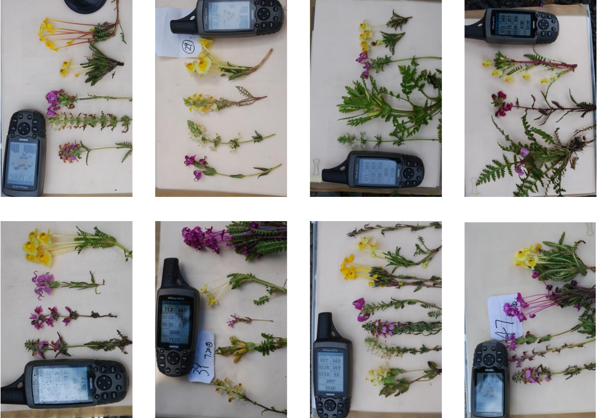

Community phylogenomics of a rapid plant radiation:
Pedicularis in the Hengduan Mountains
Deren Eaton
Dept. of Ecology, Evolution, and Environmental Biology
Columbia University
How can we most accurately reconstruct the
evolutionary history
of organisms from their genomes?
How have ecological interactions shaped evolutionary
patterns among species?
Spatial and Community Phylogenomics of Pedicularis
- Background: Pedicularis diversity and distribution.
- Case study: Character displacement in P. cranolopha
- Ongoing work: Comparative Phylogeography.
Pedicularis L. in China
Diversity and distribution:
>600 species worldwide, >300 endemic to Hengduan Mountains.
Collecting expeditions starting in 1996 from KIB, HUH, and FMNH.
Our recent Pedicularis focused expeditions in 2018, 2019, and 2021.
>117 species (>2700 specimens) from >350 locations
Morphologically diverse:
Spectacular floral diversity and convergence/homoplasy (Ree 2005, Eaton & Ree 2012).
Complex history of assembly:
Mountain uplift, glaciation, river and mountains barriers, and species interactions.
Floral diversity in Pedicularis


Reproductive interference
Negative fitness consequences imposed by one organism on another by disrupting successful reproduction (a form of selection on reproductive traits/timing/behavior)

The Hengduan Mountains
The Hengduan Mountains
The Hengduan Mountains
The Hengduan Mountains
Does interspecific competition/interference drive floral divergence?
Is floral divergence associated with genetic divergence/speciation?
Morphological terminology

The beak of the galea directs pollen placement and pickup

Elongate styles
Elongate styles have evolved multiple times (Ree 2005) and facilitate pollen competition among species (Tong and Huang 2016).


Ecological pattern: reproductive interference
We have prevously shown evidence of RI in Pedicularis communities:
Phenotypic overdispersion (co-occurring spp have dissimilar flowers)
phylogenetic randomness (communities comprise close or distant relatives)
(Eaton & Ree 2012).
Evolutionary process: character displacement
Divergent selection drives greater differences between populuations in sympatry than allopatry (e.g., benthic/limnetic sticklebacks) to reduce competition for limited resources.

Evolutionary process: character displacement
The difficulty for Pedicularis is that there are so many
species that each interacts with:
who is the focal competitor? We need a
community model of character displacement
.

Reproductive character displacement
Hypothesis: Differences among populations (within species) are a result of interspecific interactions driving character displacement in local communities.

Case study: Pedicularis cranolopha

Example sampled Pedicularis communities
P. cranolopha (widespread)
P. longiflora (widespread)
P. fetisowii (rare)
Testing association between phenotype and (biotic) environment
Lande (1976):
Selection pulls
the mean phenotype towards a local optimum, while
Gene Flow homogenizes phenotypes among populations,
and they evolve by stochastic
Drift.


Eaton et al. (In Prep)
P. cranolopha phylogeography
RAD-seq (original) PstI enzyme, ~5M reads per sample;
110 individuals total, 5-8 from each of 15 targeted locations.
ipyrad min50 assembly: 20K loci, 21% missing, 286K SNPs
raxml+structure: 4-6 clades; gene flow at contact zones.


P. cranolopha phylogeography
High population structure. PC2 separates east from west. Orange clade is undescribed; pink=P. tricolor; blue=P. cranolopha var. cranolopha; yellow=P. cranolopha longicornuta; and green may be P. cranolopha var. garnieri.
P. cranolopha RAD-seq genomics
Style length does not correlate strongly with genetic clades.

P. cranolopha RAD-seq genomics
Migration estimates are highly asymmetic (migrate-n; 100 loci): the southern-most clade (Yunnan) is a sink of gene flow. Very different relation from tree-based inference.

Summary: Multispecies Sequentially Markov Coalescent
- We extended method of Deng et al. (2021) to MSC models
- Analytical solutions for E[waiting distance] to tree or topology change
- Validated: accurate against stochastic coalescent simulations
- Waiting distances provide more information in MSC-type models than in a single population coalescent.
- We can estimate MSC model parameters from linked genome data!
- Topology-changes are easily detactable in sequence data.
Future directions
- Manuscript on biorxiv (hopefully within days!)
- Implemented at https://github.com/eaton-lab/ipcoal/ (docs coming!)
- Software to analyze genetic data is a future development
- Extensions to Multispecies Network Coalescent.
- and more...